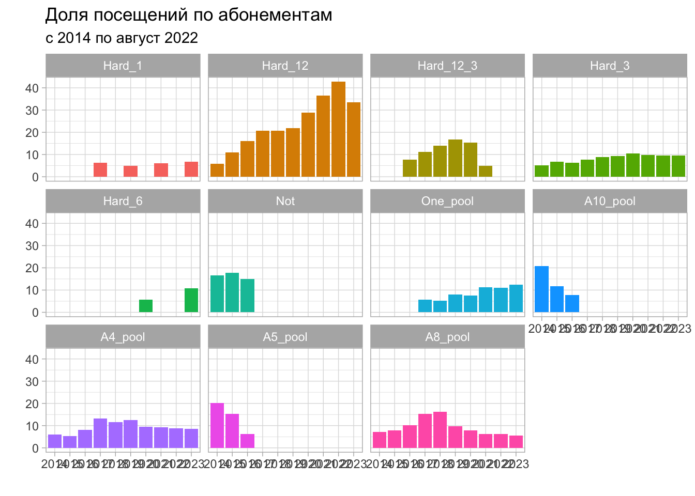
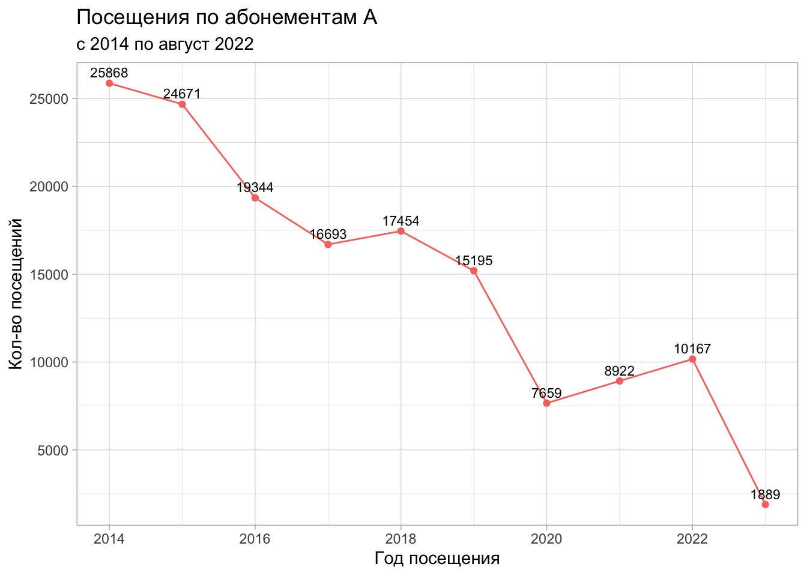
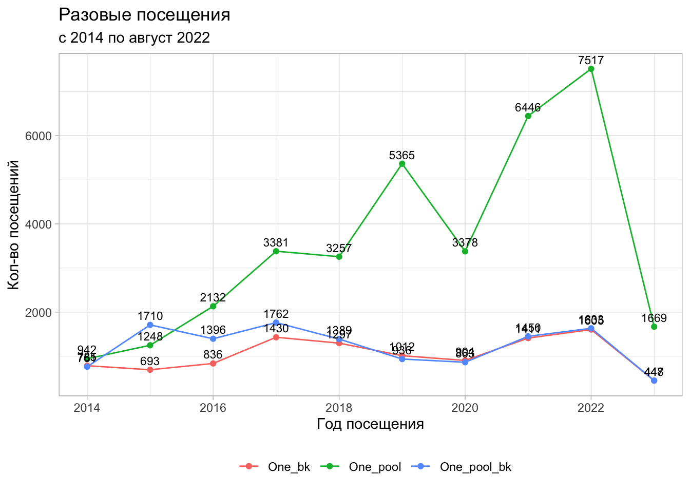
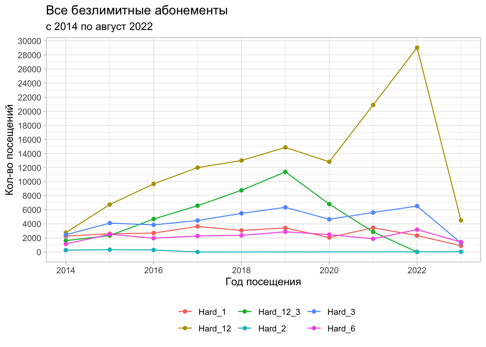
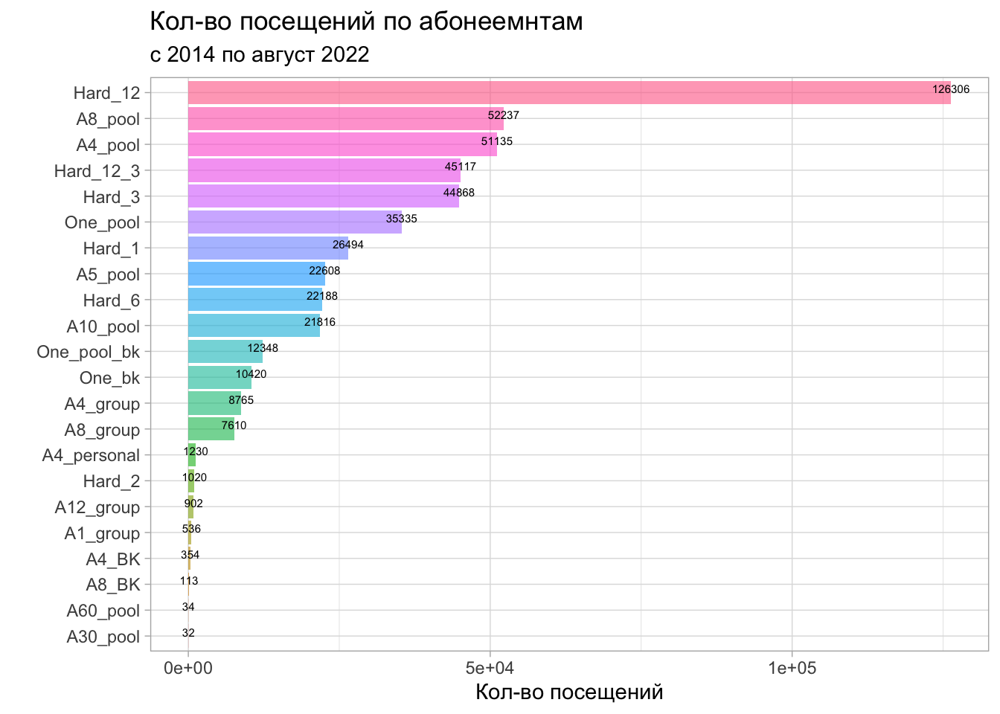
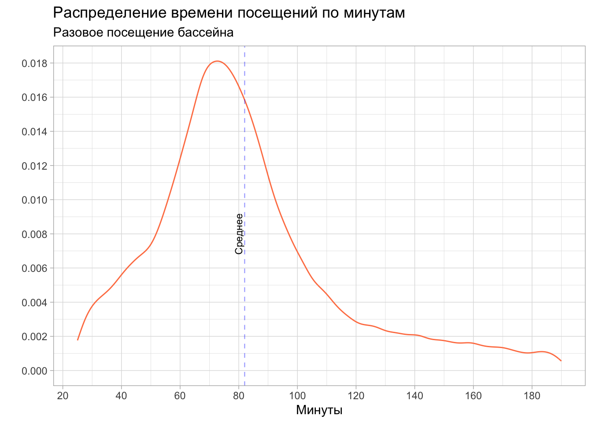

# A tibble: 20 × 23
id сard_…¹ surname first…² last_…³ start_of_visit end_of_visit
<chr> <chr> <chr> <chr> <chr> <dttm> <dttm>
1 <NA> Not Сауна … Голубая <NA> 2014-01-01 00:40:01 2014-01-01 00:40:57
2 00008 Not Мочалов Евгений <NA> 2014-01-01 02:08:32 2014-01-01 05:52:51
3 <NA> Not Сауна … Голубая <NA> 2014-01-01 05:53:23 2014-01-01 07:15:09
4 РП12 Not Разовое Посеще… <NA> 2014-01-01 07:16:57 2014-01-01 07:18:08
5 РП35 Not Разовое Посеще… <NA> 2014-01-01 07:17:29 2014-01-01 07:18:07
6 00465 А 8 пе… Плескач Николай Никола… 2014-01-01 10:04:33 2014-01-01 11:21:54
7 00448 А10 Ль… Кукина Вера Иванов… 2014-01-01 10:23:23 2014-01-01 11:15:14
8 00477 А 8 пе… Лежнин Андрей Алексе… 2014-01-01 10:46:00 2014-01-01 11:58:10
9 00019 Разово… Разовое Посеще… <NA> 2014-01-01 10:52:28 2014-01-01 12:05:04
10 <NA> Льготн… - - - 2014-01-01 10:55:35 2014-01-01 12:01:00
11 ГП1 Разово… Гостин… Прожив… <NA> 2014-01-01 11:32:42 2014-01-01 12:29:16
12 06155 Утро-Д… Семено… Юлия Алекса… 2014-01-01 11:33:13 2014-01-01 13:15:43
13 00113 А10 Ль… Шаров Алекса… Алекса… 2014-01-01 11:50:08 2014-01-01 13:12:30
14 00114 Льготн… Шаров Алекса… Евгень… 2014-01-01 11:51:05 2014-01-01 13:11:36
15 ГП6 Бассей… Гостин… Прожив… <NA> 2014-01-01 11:52:15 2014-01-01 11:56:44
16 00118 Детски… Шаров Илья <NA> 2014-01-01 11:56:32 2014-01-01 13:12:40
17 00119 1 мес … Смирно… Алла Геннад… 2014-01-01 12:02:42 2014-01-01 13:13:35
18 00061 Утро-Д… Василец Татьяна Иванов… 2014-01-01 12:11:40 2014-01-01 13:34:56
19 00060 Детски… Василец Михаил Владис… 2014-01-01 12:11:55 2014-01-01 13:35:10
20 00059 Льготн… Пчелин… В <NA> 2014-01-01 12:25:56 2014-01-01 13:48:52
# … with 16 more variables: id_key <chr>, duration_visit <dbl>,
# date_start <date>, round_date_start <date>, year_start <dbl>,
# month_start <dbl>, day_number_start <dbl>, wday_start <dbl>,
# date_end <date>, round_date_end <date>, year_end <dbl>, month_endt <dbl>,
# day_number_end <dbl>, wday_end <dbl>, сard_type_2 <chr>, segment <chr>, and
# abbreviated variable names ¹сard_type, ²first_name, ³last_name1 Журнал посещений
1.1 Знакомство с данными
Мы начнем с отчета, где фиксируются данные посещений спа-центра. В этом датафрейме мы имеем следующие данные:
Обратите внимание
Данные за 2022 год предствалены до 2023-01-31 23:56:17
Внимание
Хотелось бы напомнить, что с марта по июль 2020 года была пандемия COVID-19. Поэтому на все показатели 2020 нужно обращать внимание с учетом этого события.
В нашей таблице содержатся следующие столбцы:
Заметка
Мы выделим наиболее важные для нашего понимания
id- номер картыstart_of_visit- начало визитаend_of_visit- окончание визитаduration_visit- продолжительность визита (в минутах)сard_type_2- преобразованный тип абонементаsegment- сегмент гостя
В наших данных есть много пропущенных значений в переменной id и сard_type_2.
Есть несколько причин этого:
В начале работы спа-центра были созданы карты
СаунаиАноним, к которым не привязывался номер картыОтсутсвие названия абонемента в переменной сard_type_2 связано с тем, что по картам Сауна, оказывались услуги типа “Оформить визит”, которые не требуют продажи абонемента.
Если мы посмотрим на данные, например, 2019 года, то такой проблемы не будет.
# A tibble: 5 × 23
id сard_t…¹ surname first…² last_…³ start_of_visit end_of_visit
<chr> <chr> <chr> <chr> <chr> <dttm> <dttm>
1 05334 #А4 24 … Митичк… Ирина Валент… 2019-01-01 05:20:34 2019-01-01 06:43:33
2 305 Бассейн… Номер 305 Скидка… 2019-01-01 09:26:12 2019-01-01 10:13:15
3 401 Бассейн… Номер 401 Скидка… 2019-01-01 09:47:55 2019-01-01 10:51:22
4 401_1 Бассейн… Номер … Доп. м… 1 2019-01-01 09:48:24 2019-01-01 10:52:39
5 303 Бассейн… Номер 303 Скидка… 2019-01-01 10:42:39 2019-01-01 12:03:43
# … with 16 more variables: id_key <chr>, duration_visit <dbl>,
# date_start <date>, round_date_start <date>, year_start <dbl>,
# month_start <dbl>, day_number_start <dbl>, wday_start <dbl>,
# date_end <date>, round_date_end <date>, year_end <dbl>, month_endt <dbl>,
# day_number_end <dbl>, wday_end <dbl>, сard_type_2 <chr>, segment <chr>, and
# abbreviated variable names ¹сard_type, ²first_name, ³last_nameПеременная сard_type_2
У нас есть переменная сard_type_2. Это перекодированная версия столбца сard_type.
Эта операция нам понадобилась, чтобы привести к единому формату название абонементов, которые в разный период времени имели различные наименования, но по сути являлись одним и тем же.
Ниже мы посмотрим какая доля посещений приходится на каждый вид абонемента:
Warning: Returning more (or less) than 1 row per `summarise()` group was deprecated in
dplyr 1.1.0.
ℹ Please use `reframe()` instead.
ℹ When switching from `summarise()` to `reframe()`, remember that `reframe()`
always returns an ungrouped data frame and adjust accordingly.# A tibble: 31 × 2
`Тип абонемента` `Доля %`
<chr> <dbl>
1 Hard_12 23.2
2 А8_pool 9.7
3 А4_pool 9.5
4 Hard_12_3 8.4
5 Hard_3 8.3
6 One_pool 6.5
7 Not 5.2
8 Hard_1 4.9
9 А5_pool 4.2
10 А10_pool 4.1
# … with 21 more rows22% посещений спа-центра приходится на годовой безлимитный абонемент. Стоит отметиь, что это абонементы “Серебро” и “Безлимитный”.
Давайте посмотрим на тоже самое, но в разрезе годов.
Warning: Returning more (or less) than 1 row per `summarise()` group was deprecated in
dplyr 1.1.0.
ℹ Please use `reframe()` instead.
ℹ When switching from `summarise()` to `reframe()`, remember that `reframe()`
always returns an ungrouped data frame and adjust accordingly.Warning: Returning more (or less) than 1 row per `summarise()` group was deprecated in
dplyr 1.1.0.
ℹ Please use `reframe()` instead.
ℹ When switching from `summarise()` to `reframe()`, remember that `reframe()`
always returns an ungrouped data frame and adjust accordingly.# A tibble: 31 × 11
сard_…¹ `2014` `2015` `2016` `2017` `2018` `2019` `2020` `2021` `2022` `2023`
<chr> <dbl> <dbl> <dbl> <dbl> <dbl> <dbl> <dbl> <dbl> <dbl> <dbl>
1 Free 0.5 2.5 2.8 3.3 4.1 4.2 1.3 2.5 2.8 2.2
2 Hard_1 4.8 4.2 4.5 6.3 4.9 5 4.7 6 3.5 5.4
3 Hard_12 5.8 11 16.1 20.6 20.8 21.8 28.8 36.4 42.8 34.6
4 Hard_1… 3.4 3.8 7.8 11.3 14 16.7 15.3 5 0 NA
5 Hard_2 0.6 0.6 0.5 0 NA NA NA NA 0.1 0.4
6 Hard_3 5.2 6.7 6.4 7.7 8.8 9.3 10.5 9.8 9.6 9.8
7 Hard_6 2.4 4.1 3.3 3.9 3.8 4.2 5.6 3.3 4.7 10.9
8 Not 16.7 17.8 14.9 0.2 0.1 NA NA NA NA NA
9 One_bk 1.6 1.1 1.4 2.5 2.1 1.5 2 2.5 2.4 3.5
10 One_po… 2 2 3.5 5.8 5.2 7.9 7.6 11.2 11.1 12.9
# … with 21 more rows, and abbreviated variable name ¹сard_type_2Здесь нужно отметить, что до 2016 года в спа-центре не было годовых безлимитных карт, но они есть в нашем отчете. Это проблема связана с тем, что вместо того, чтобы создать новые абонементы - переименовали старые. Это не сильно повлияет на наш отчет в дальнейшем. Но будем иметь это ввиду на будущее.
Кроме того, мы можем заметить, что до 2017 года наибольшая доля посещений приходилось на абонементы типа А (А10, А5, А4 и прочее). Абонменты типа Not, с высокой долей вероятностью, - различные разовые посещения.
Визуализируем наши данные по типам карт. Предварительно уберем из данных все абонементы, которые имеют долю не менее 5% посещений в каждом годе.

Мы видим, что доля посещений на безлимитные абонеменнты 12 мес увеличивается с каждым годом. Посмотрим, как это выглядит в абсолбтных цифрах. Выделим только пермеменную Hard_12
Обратите внимание
Hard_12 - содержит в себе как карты типа “Серебро”, так и карты типа “Золото”. Мы объединили их по причине того, что карты “Золото” были убраны из продаж. То есть, часть аудитории в настоящее время пользуется обычными безлимитными годовыми абонмеентами, что отражается на доле посещений.
Вторыми по посещаемости в наших данных являются карты А8_pool. Думаю, что есть смысл посмотреть динамику посещений по всем картам типа А (за исключением групповых занятий).

Мы видим, что количество посещений по данным абонементам с каждый годом сокращается. С 2016 года это свзано с введением безлимитных абонементов.
Посмотрим на общее количесво посещений из года в год.

Максимальное количество посещений было в 2019 году. По остальным годам видно, что количество посещений варьируется от 57 323 в 2021 году до 62 580 в 2018 году.
Давайте посмотрим на динамику разовых посещений. Возьмем все разовые посещения. Исключим только групповые занятия.

Мы видим, что в данном случае, динамика разовых посещений положительная. Давайте посмотрим на структуру разовых посещений.

Мы видим, что разовые посещения в бассейн One_pool имеют наибольший вклад в единоразовых посещениях нашего комплекса.
Ранее мы смотрели на годовые абонемнты Hard_12, так как они имели наибольшую долю посещений. Было бы интересно посмотреть на все безлимитные абонементы.

Понятно, что большое количество посещений приходится на годовые абонементы. Но нам интересна динамика посещений и по другим безлимитным посещениям. Мы видим, что абонемент Hard_3 пользуется большей популярностью, чем Hard_6.
Давайте теперь выделим все посещения абонеметов группы А, группы Hard и One (разовые).

Суммируем все посещения по типам абонементов.

Суммируем все посещения по типам абонементов в разрезе годов.

Мы видим, что основынми группами абонементов, по которым чаще всего ходят гости, являются:
Безлимитные абонементы типа
HardАбонементы группа
АРазовые абонементы
One
Делать какие-либо выводы сейчас будет своевременно. Имеет смысл, полученные данные, рассматривать вместе с отчетом о продажах карт, к которому мы перейдем позже.
Переменная duration_visit
Абонементы группы А
В наших данных также имеется перменная, которая отражает продолжительность посещения спа-центра, Мы знаем, что абонементы группы А ограничены временм посещения 45 минут. Плюс время на переодевание. В среднем мы закладываем 80-90 минут на посещение бассейна нашими гостями. Давайте проверим так ли это в среднем:
# A tibble: 1 × 3
`Среднее время посещения` `Медианное время посещения` `Стандартное отклонение`
<dbl> <dbl> <dbl>
1 80.0 78 26.9Посмотрим на график

Мы видим, что среднее время равняется 80 минутам. Стандартное отклонение - 26.9 минут. Это связано с тем, что в данных есть ошибки. Также, мы можем наблюдать данные ошибки и на графике. Причины различны: от некорректной работы ПО до ошибки администратора.
Давайте скорректируем наши данные, а именно отсечем по 5% данных с каждого конца,
Заметка
Таким образом, мы потерям часть информации, но уберем крайние значения. Скорее всего среднее и медиана изменятся не существенно, а графически мы получим более реальную картину.
Наши крайние значения:
Q1 = 55
Q4 = 113
Посотрим как изменилось среднее, медиана и стандратное отклонение и сразу взгляним на график
# A tibble: 1 × 3
Среднее Медиана Стд.отклонение
<dbl> <dbl> <dbl>
1 79.6 78 12.4
Мы видим, что существенно изменилось только стандартное отклонение. Остальные показатели остались в пределах первоначальных значений.
Можно заключить, что, в целом, гости, которые посещели наш спа-центр по абонементам группы А, укладывались в рамки того времени, которое мы устанавливали.
Тоже самое должно быть характерно и для абонементов разового посещения в бассейн.
Абонементы разового посещения в бассейн
# A tibble: 1 × 5
`Среднее время посещения` `Медианное время посещения` Станда…¹ 5% кв…² 95% к…³
<dbl> <dbl> <dbl> <dbl> <dbl>
1 86.6 77 53.8 23 190
# … with abbreviated variable names ¹`Стандартное отклонение`, ²`5% квантиль`,
# ³`95% квантиль`
Мы видим, что гости, которые посещают спа-центр разово, более склонны нарушать правила клуба. Стандартное отклонение посещения - 53.8 минуты, а среднее 86.6 минут.
Мы проделаем туже корректировку с данными, как это было с абонементами гуппы А.
# A tibble: 1 × 3
Среднее Медиана Стандартное_отклонение
<dbl> <dbl> <dbl>
1 81.8 77 32.0
Мы видим, что среднее изменилось не существенно и теперь равняется 81.8. На графике теперь видно, что большая часть посетителей укладывается в рамки 80-90 минут посещения.
Абонементы группы Hard
Абонменты гурппы Hard неограничены во времени и включают в себя как посещения бассейна, так и посещения банного комплекса. Наша гипотеза заключалась в том, что гости не будут находиться в комплексе в среднем более 3 часов (180 минут).
Сейчас мы посмотрим как распределено время посещения по всем абонеметам типа Hard. Далее посмотрим каждый абонемент в отдельности.
Заметка
Данные абонементы имеют выбросы. Много крайне низких и высоких значений. Мы понимаем, что это по большой части ошибки, связанные с разными причинами. Давайте посмотрим на квантили распредения и очистим наши данные от критических значений. В нашем случае Q1 будет равняться 5%, а Q4 - 95% данным.
# A tibble: 1 × 2
Q1 Q4
<dbl> <dbl>
1 59 192Мы видим, что 95% данных лежит в переделе 192 минут, то есть все остальные значения, которые больше 192 минут, характерны только для 5% случаев. 5% данных имеют показателоь менее 59 минут.
Исходя из вышесказанного мы отсечем все данные, которые менее Q1 и не больше Q4 и построим график распредлеения.
# A tibble: 1 × 3
Среднее Медиана Стандартное_отклонение
<dbl> <dbl> <dbl>
1 110. 105 31.7
Мы видим, что основная доля посещений лежит левее среднего, то есть мы можем заключить, что наша гиппотеза оказалась ошибочной, правда, в нашу пользу.